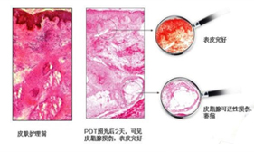

技术强院
无耐药性 安全祛痘 效果立杆见影
目前治疗青春痘(痤疮)的方法有很多，其中，抗生素作为治疗痤疮的主要手段，其耐药问题日趋严重。具统计，在美国，痤疮丙酸杆菌对红霉素、四环素、克林霉素的耐药性已从1978年的20%上升到1996年的62%。耐药事件的增多，延长了治疗的周期、降低了抗生素的疗效。同时某些抗生素会引起色素沉着、可逆的肝炎等不良反应，针对这一情况，南充润和皮肤病专科医院斥资引进了光动力疗法，同时也成为南充是唯一引进光动力疗法的医院。
抗生素治疗
中医调理
外敷药物
光动力疗法
光动力疗法-国内治痘效果最佳技术
光动力学疗法(PDT)是指对患者病灶给予光敏剂的前提下，以特定波长的光照射病灶区，使之产生光敏剂的氧化反应，生成各种高反应性的化学活泼物质，达到杀伤病灶的新型治疗方法。
治疗优势Therapeutic
advantage

直接杀灭痤疮丙酸杆菌等病原微生物;
- 
作用于皮脂腺，造成皮脂腺萎缩，抑制皮脂分泌;
改善毛囊口角质形成细胞的过度角化，改善毛囊皮脂腺开口的阻塞;
促进皮损愈合，预防或减少痤疮瘢痕残留。
临床试验Clinical trial
光动力疗法在青春痘的治疗上，完全可以做到根据患者性别、年龄、肤质的不同来灵活选择治疗方案，而且一般情况下，7-20天即可完全治好。据2009-2014中国祛痘市场调研数据分析，中西医结合五联理疗治疗青春痘有效率可达97.8%
治疗图解/Therapy diagram
- 治疗前
 治疗后
治疗后
- 南充润和皮肤病专科医院病例档案NO.960396
-
- 姓名：赵**
- 性别：男 年龄：14
- 病史：2年
- 病情诊断：重度痤疮
- 就诊时间：2017-7-13
- 康复时间：2017-10-28
- 入院症状：面部两侧，额头部位出现米粒到豌豆大丘疹状脓包，分布较密集
- 治疗方法：光动力祛痘治疗系统，每日一次，疗程6周
- 治疗周期：23天治后肌肤光洁，不再长痘